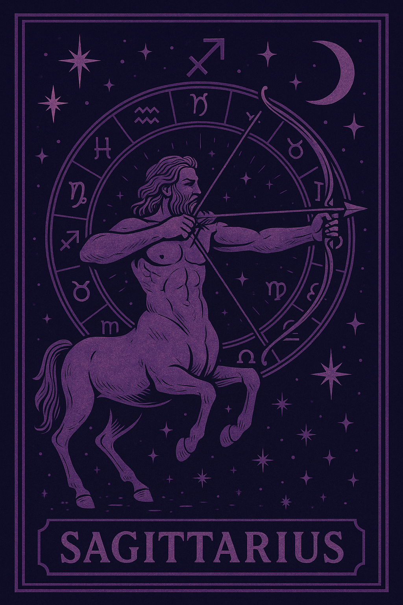
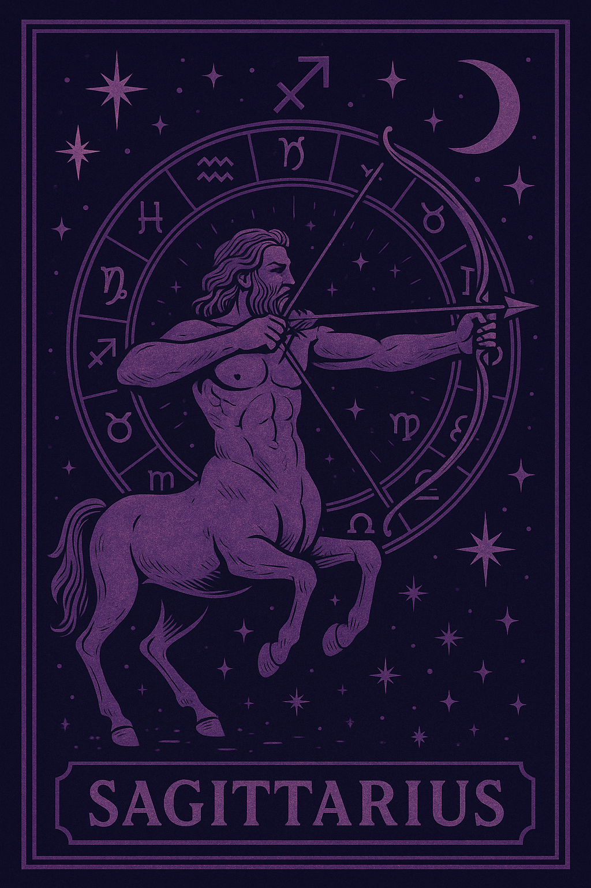
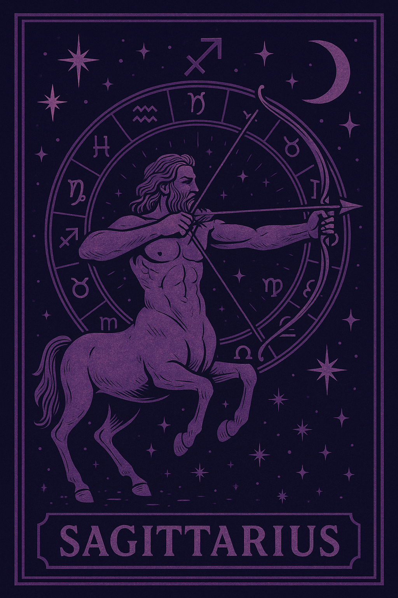

"And don't you know that we are gods And holy blood runs trough our veins"
Descubre las herramientas disponibles en tu camino para reconocerte en tu estado mas puro. Que resuena contigo?
Registrate

 

Descubre las herramientas disponibles en tu camino para reconocerte en tu estado mas puro. Que resuena contigo?
Registrate

La herramienta del tarot Rider Waite te ayuda a que puedas tener una vision clara del por qué en tu camino y como mejorarlo, o simplemente tener un consejo de los arcanos. Combinamos el significado de los Arcanos mayores y menores mas una canalizacion en luz.
La herramienta de la Astrologia nos brinda una vision mas clara de Autoconocimiento donde podremos descubrir nuestro camino de vida, fortalezas y debilidades, Karma y Darma, etc. Una muy buena herramienta complementaria con las consultas de tarot.
Aprende a conectar con tu bruj@ inter@, reconecta la magia de las plantas, ilumina tu espiritu con la magia de las velas, conecta con las emociones del agua y purificate con el humo de los inciensos.
Conoce las herramientas del chamanismo, aprende a conectar con tu animal de poder, a realizar limpiezas energéticas y a sanar tu cuerpo y alma con la medicina de la naturaleza.

Descubre todos los productos disponibles de la tienda para potenciar tus rituales y potenciarte a vos como bruj@.